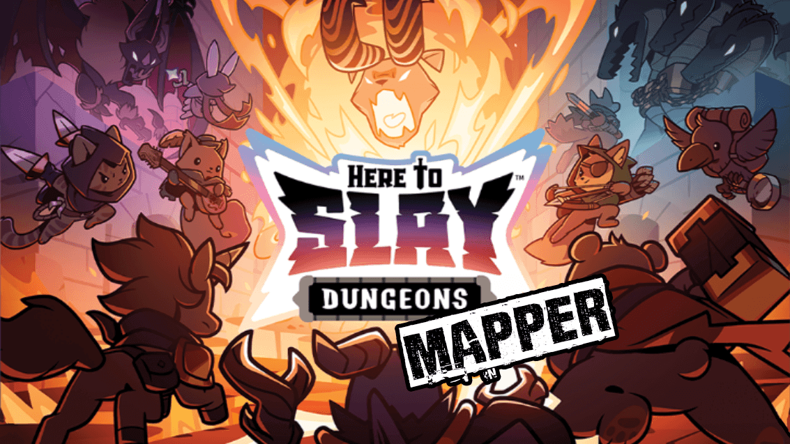
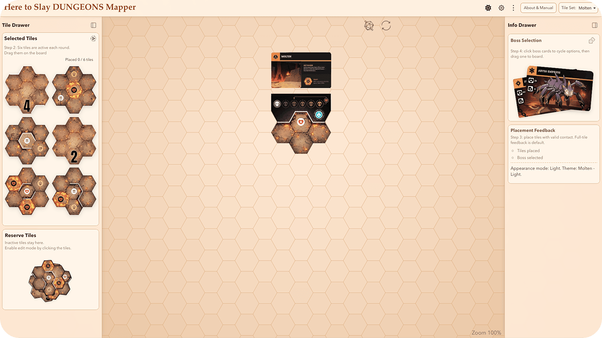
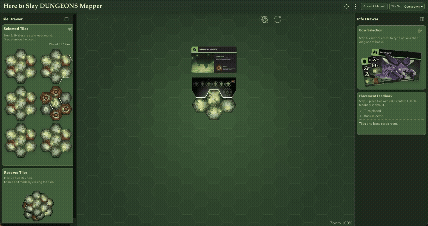

Here to Slay: DUNGEONS Mapper
This app is a dungeon layout builder for Here to Slay: DUNGEONS. It lets you place tiles on a hex board, test valid layouts, auto-generate complete dungeons, and add bosses before needing to wrestle with the physical tiles.
The current tile, reference-card, and boss-card images should be treated as provisional stand-ins, not final released graphics. Right now the focus is on getting the rules, metadata, and overall framework solid so the official art can be swapped in cleanly as it becomes available.
This page explains the user workflow, the important features, and the shortcuts built into the mapper.
This project was made by one person, not a full studio with a dedicated QA team. That means bugs, weird edge cases, and the occasional bit of nonsense are bound to slip through now and then. If you run into something odd or have a suggestion for making the mapper better, I’m always happy to hear it.
/Rod
Quick Overview
Getting Started
When you open the mapper, the board sits in the middle, the boss and feedback area is on the left, and the tile tray is on the right. The entrance tile is placed automatically together with the dungeon reference card. The tool then selects six random dungeon tiles and keeps the remaining three in reserve.
The visual assets shown here are currently framework-first placeholders for ongoing development. As official graphics are finalized and released, they can be swapped into the existing structure without having to rebuild the placement logic around them.
Your first job is simple: build a dungeon around the entrance tile. You can do that manually by dragging tiles from the tray, or you can let the Auto Build button do the heavy lifting.
- Choose a tile set from the Tile Drawer heading.
- Review the six selected tiles in the right drawer.
- Drag tiles onto the board and rotate them as needed.
- When placing a tile, a green or red outline will tell you if the placement is allowed.
- The feedback panel will give info for placement success or warnings.
- Add a boss once the dungeon is ready.

Understanding the Layout
Top Bar
The top bar contains the app title, an appearance-mode button, the Advanced Tools menu, the Tile Editor / Build View toggle, the Quick Actions menu, and the Guide link. The Tile Set menu lives in the Selected Tiles heading in the right drawer.
Advanced Tools contains placement-feedback and build-rule toggles such as Random Boss: All Sets, Show Walls, Show Portals, Ignore 2 face connection rule, and Auto Build: Default Mode. When Auto Theme is off, the theme picker appears there too. In the desktop app, this menu also includes Choose Data Folder. In Tile Editor, Reset Tile Points appears for built-in sets, while some debug-only tools show up only in dev mode.
Quick Actions contains Auto Theme, Copy Share Link, and Export PDF. Export PDF works in Build View only and opens a print-ready preview for saving as PDF. Reset Tiles and Boss Cards stays on the board as the reset icon, not inside Quick Actions.
Copy Share Link creates a URL that restores the current build when opened, including the selected tile set, entrance and reference-card setup, placed tile positions and rotations, tray and reserve order, boss placements, and board zoom and pan. If the layout depends on a custom tile set, the mapper can also export a matching custom-set package and helper HTML so the receiver can import the custom data before opening the link.
Board
The board is the main workspace. It includes the hex grid, entrance tile, reference card, placed dungeon tiles, boss tokens, Auto Build button, Reset Tiles and Boss Cards button, and zoom badge.
Left Drawer
This is the Info Drawer. It sits on the left side in the standard desktop layout and contains the Boss Selection pile plus Placement Feedback, including checklist progress and status messages.
Right Drawer
This is the Tile Drawer. It sits on the right side in the standard desktop layout and contains the Tile Set menu, the six selected tiles for the current build, and the reserve pile for inactive tiles. In compact mode, the Tile Drawer becomes a compact rail on the left and the Info Drawer is hidden.
Tip: If you want more room to work, collapse one or both drawers. The mapper is much easier to read on smaller screens when you keep the side panels under control.
The Board and Core Anchors
The board uses a visible hex-grid system, so tiles snap into position cleanly. The entrance tile is placed first and acts as the anchor point for the dungeon. A reference card sits above it and becomes the snap area for boss placement.
Entrance Tile
The entrance tile is always placed first, cannot be sent back to the tray, and cannot be rotated.
Reference Card
The reference card gives the boss tokens a clear home and keeps the layout organized around the entrance area.
Building Your Dungeon
Placing Tiles
Drag a tile from the tray to the board. As it moves over the play area, the mapper snaps it to the nearest hex position and checks whether the current spot is valid. If the tile meets the placement rules, it stays. If it fails, the feedback panel tells you why.
Rotating Tiles
Hovering over a rotatable tile reveals the rotate controls. You can rotate regular tiles in either direction to line up faces and improve legal contact. Already placed tiles are re-validated immediately: if a tile was connected to only one neighbor, the mapper will keep rotating in the same direction until it finds the next valid orientation; if a tile was connected to two or more neighbors and rotation breaks it, the tile is highlighted red so you can fix it manually.
Legal Placement
The mapper enforces the dungeon placement rules in normal use. A tile needs enough valid contact with the current layout, overlaps are rejected, and blocked faces on the entrance tile are respected.
What Happens When Something Fails
Invalid placements are clearly marked and explained. Depending on the situation, a bad tile may be pushed toward an open hex or sent back to the tray after a short delay. Invalid rotations on already placed tiles are now handled separately and may either auto-correct or stay highlighted for manual cleanup.
Placement Feedback
Classic Feedback
The default mode gives you straightforward green/red placement feedback at the tile level.
Face-by-Face Feedback
You can enable face-based placement feedback in Advanced Tools to see more detailed connection information.
Status Messages
The left-side Info Drawer explains why a tile is valid, invalid, returning to the tray, or causing some other change in state.
Checklist
The feedback checklist tracks whether all six tiles are placed and whether a boss has been selected.
Auto Build
If you want a complete dungeon quickly, use the Auto Build button on the board. The mapper chooses six regular tiles for the round, places them in a valid arrangement around the entrance tile, then also places a random boss.
Auto Build is useful when you want a fast starting point, a random layout to play from, or just a break from dragging and rotating everything manually.
If the auto-builder cannot find a legal result, the status panel will tell you and suggest trying again or rerolling the tile selection.
Default Mode
Auto Build: Default Mode is enabled by default and keeps the dungeon in the lower part of the board, below the entrance tile. Turn it off in Advanced Tools if you want the dungeon to expand freely in any direction.

Best use: Auto Build is great for fast setup, but manual placement is still better if you want very specific dungeon shapes.
Tile Management
Reroll Tiles
The reroll button in the Selected Tiles section gives you a fresh set of tray tiles while leaving already placed tiles alone.
Reserve Tiles
The reserve pile contains the inactive tiles. Click it to open Reserve Edit Mode, where the reserve tiles fan out so you can swap them with tray tiles.
Swapping
Select a reserve tile, then select a tray tile to swap them. This gives you more control without wiping the whole layout.
Reset Layout
The reset button on the board clears placed dungeon tiles and boss cards and puts the setup back at its starting state.
Tile Editor & Custom Tile Sets
The Tile Editor is where tile metadata and custom tile sets are managed. Use it when you need to adjust walls, endpoint rules, portals, guide points, or build a full custom tile set with your own art.
You can open the editor for built-in sets to fine-tune placement data, or create and manage custom tile sets from the same page. The top-bar button switches between Tile Editor and Build View, and the app restores your build layout when you return.
- Use Add Custom Tile Set to create a new custom set and jump straight into the editor.
- Use Import Custom Tile Set to load a `.zip` package that contains `manifest.json`, assets, and optional `wall_editor.json` data.
- Replace art for the entrance tile, all nine regular tiles, the reference card, and both boss cards directly inside the editor.
- Edit wall faces, end-tile flags, portals, and guide points without leaving the editor screen.
- Use the same page to rename, export, or delete the current custom tile set.
What the editor changes
Wall faces affect placement validation. End-tile flags control whether Auto Build can use a tile as a dead end. Portals tell Auto Build to avoid portal-to-portal adjacency when possible. Guide points define the draggable outline handles that control how tile faces are interpreted.
For built-in sets, guide point templates are shared across the built-in catalog just like before. For custom sets, guide point templates are isolated per custom tile set, so editing one custom set will not rewrite the built-in defaults or another custom set's point layout.
Rename and duplicate import behavior
Renaming a custom tile set changes its display label only. It does not rewrite the internal ID stored inside the package.
If you later import a package whose internal custom ID already exists locally, the mapper adds it as a new copy instead of overwriting the old one.
Storage, data folders, and backups
In the web app, custom tile sets and editor changes are stored in browser-local storage. In the desktop app, settings and custom tile sets live in the data folder you choose.
If the desktop app has no data folder yet, built-in content still works but edits and custom tile-set imports cannot be saved. The app may prompt for a folder on startup, and you can also use Choose Data Folder in Advanced Tools to set or change that location.
Either way, local persistence is not the same thing as a backup. Use the custom set's export button or the Tile Editor toolbar's Export All Custom Tile Sets button when you want a portable copy.
Important: Built-in tile metadata edits are local too, whether that means browser storage or the desktop data folder. Reset Tile Points is available only for built-in tile sets and clears guide-point edits back to the baked defaults. Auto Build is disabled while Tile Editor is open, and custom-set backups should use the Tile Editor export controls.
Boss Cards
The Boss Selection pile is in the left-side Info Drawer during the standard layout. In compact mode it moves into the compact tile rail. You can click the pile to cycle available bosses, use the random-boss dice button, or drag the top boss card onto the board manually.
Once placed, boss tokens snap to magnet positions around the reference card. They can be moved later, and dragging a placed boss back to the pile or Info Drawer returns it cleanly.
Boss Placement
Click to cycle bosses, drag to place them, or let the random-boss button choose one for you. If you enable Random Boss: All Sets in Advanced Tools, the random boss draw can pull from every ready tile set instead of only the current one. Once on the board, bosses stay aligned to the reference area instead of floating around like lost side quests.
Appearance, Themes, and Layout Controls
The appearance mode control lets you switch between Light, Dark, and System mode. The mapper remembers light and dark preferences separately, so changing modes does not scramble your style choices.
Auto Theme is in Quick Actions. When Auto Theme is on, the UI follows the current tile set. When Auto Theme is off, the theme selector appears in Advanced Tools so you can choose a specific UI theme. Each dungeon set has light and dark theme variants, but you can pick another one if you prefer.
Both side drawers can also be collapsed independently. That makes the board much easier to work with when you want maximum layout space.
Theme-aware page styling
This page is set up to use the same core CSS variables as the main app, so the Guide can follow the chosen color theme instead of feeling like it belongs to a completely different website.
Keyboard Shortcuts
| Key | What It Does | When It Works |
|---|---|---|
| A | Collapse or expand the left-side Info Drawer. | When you are not typing into an input. |
| B | Spawn a random boss. | When you are not typing into an input. |
| D | Collapse or expand both drawers. | When you are not typing into an input. |
| E | Rotate the hovered or selected tile clockwise. | When a tile is hovered or selected and you are not typing into an input. |
| R | Run Auto Build. | When you are not typing into an input. |
| W | Rotate the hovered or selected tile counter-clockwise. | When a tile is hovered or selected and you are not typing into an input. |
| S | Collapse or expand the right-side Tile Drawer. | When you are not typing into an input. |
| X | Reset tiles and boss cards. | When you are not typing into an input. |
| Z | Reset board zoom and pan. | When you are not typing into an input. |
| Esc | Close open dropdowns and small menus. | For appearance mode, theme menus, quick actions, and similar popups. |
Important: Shortcuts are ignored while you are typing in an input field or using modifier keys like Ctrl, Cmd, or Alt.
Mouse and Pointer Controls
Drag Tiles
Drag tiles from the tray to the board, or drag placed tiles back toward the drawer to return them.
Pan the Board
Click and drag empty board space to move the current view.
Zoom
Use the mouse wheel over the board to zoom in and out. Click the zoom badge to reset the view.
Drag Bosses
Drag the top boss card to the board, or reposition a boss token that is already placed.
Use Reserve Edit Mode
Click the reserve pile to fan it out, then click reserve and tray tiles to swap them.
Hover Controls
Hovering a tile reveals rotation buttons and also makes that tile the shortcut target.
Available Tile Sets
Molten
In Molten, you descend into a dungeon of fire, ash, and raw destructive power.
Flamebeard brings forged fury and burning aggression, while Abyss Empress adds a darker, more sinister edge.
It feels like a place where everything is hot, hostile, and ready to punish hesitation.
Overgrown
Overgrown is a dungeon swallowed by wild growth, roots, and creeping corruption.
Bloom Brute feels like brute force wrapped in living plant matter, while Rootgnaw adds a more predatory, lurking threat.
What awaits you here is not calm nature, it is nature that has taken over and turned mean.
Dreamscape
Dreamscape feels magical, surreal, and just unsettling enough to keep you wary.
Sleep Walker gives it a dreamy but dangerous tone, while Moongrin makes the dungeon feel stranger and more unpredictable.
What awaits you here is not straightforward horror, but a world of illusion, moonlit oddity, and hidden danger.
Nightmare
Nightmare is the twisted reflection of Dreamscape, darker, more hostile, and openly corrupted.
Toxolotl brings a grotesque, unstable energy, while Bloodwing makes the whole dungeon feel more predatory and aggressive.
What awaits you here is a place that feels warped on purpose, where everything seems designed to go wrong.
Submerged
Submerged throws you into a dungeon shaped by water, currents, and deep-sea danger.
Hydrocodile brings brute aquatic force, while Surge Spirit feels faster, stranger, and more elemental.
It gives the sense that the dungeon is never still, and that danger can rise from any direction.
Deep Freeze
Deep Freeze is a frozen dungeon of ice, silence, and sharp, unforgiving cold.
Dracos adds the threat of an ancient skeletal dragon, while Tundratuga feels like slow-moving but unstoppable glacial strength.
What awaits you here is a colder, harsher kind of danger, less chaos, more inevitability.
Helpful Tips
- Use Auto Build when you want a fast starting point, then adjust the layout manually.
- Collapse the drawers if you want more board space for dragging and zooming.
- Use reserve swapping when the tray is close to what you want but not quite right.
- Enable face-based placement feedback if you want more detailed connection guidance.
Known Issues
- If you move a tile that is already placed and that tile was acting as a bridge between two parts of the dungeon, it is possible to leave behind a closed-off island of tiles. The mapper does not currently prevent that state. It is a known limitation, and for now the assumption is that the break is visually obvious enough that you can spot it and fix it manually.
- The current tile, reference-card, and boss-card graphics are not final release assets. They are being used to prove out the framework now so the official art can be slotted in later with less rework.
Buy Me a Little Dungeon Fuel
This mapper will stay free to use. No paywall, no “premium dungeon tiles,” no nonsense.
If it helps you plan cool layouts, build random dungeons faster, or avoid a bit of setup fiddling, and you feel like tossing a few coins into the tavern jar, that is very welcome, but never expected.